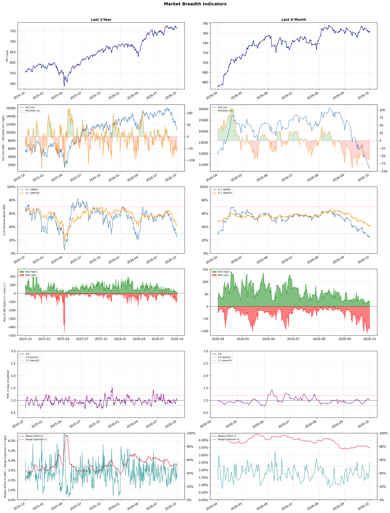

A daily market breadth and sector rotation report for active investors
| Item | Read |
|---|---|
| Regime | Defensive |
| Risk posture | Defensive |
| Universe | 1,319 stocks tracked · 19 new 52-week highs · 30 active swing setups |
| Breadth | only 25.8% of tracked stocks are above SMA50, new lows exceed new highs (83 vs 19), McClellan oscillator (breadth momentum) is negative at -46.4 |
| Leadership | Oil & Gas Refining & Marketing, Diagnostics & Research, and Semiconductor Equipment & Materials |
| Weakest groups | Resorts & Casinos, Chemicals, and REIT - Mortgage |
Use this report to prioritize research and chart review; validate entries, stops, liquidity, earnings, and risk before acting.
| Item | Read |
|---|---|
| Primary read | Defensive regime with Defensive risk posture. |
| Research queue | PBF, MPC, VLO, DINO, PSX |
| Leadership focus | Oil & Gas Refining & Marketing, Diagnostics & Research, and Semiconductor Equipment & Materials |
| Caution list | Resorts & Casinos, Chemicals, and REIT - Mortgage |
| Review prompt | Check extension risk, chart location, fundamentals, valuation, and earnings before using any research row. |
| Item | Read |
|---|---|
| Primary read | 4 active risk warnings; use screen output as watchlist input only. |
| Bullish screens | ACMR, LRCX, P, HNGE, VSH |
| Bearish screens | XRAY, PUK, CWH, APP, TLRY |
| Alerts / levels | Automated trigger, stop, ATR, liquidity, reward/risk, and event-risk levels are pending future enrichment. |
| Review prompt | Open the linked chart, define trigger and invalidation, then check liquidity and event risk independently. |
Risk Posture: Defensive — screen backdrop favors caution; require independent risk review before new exposure
Metric context: McClellan below -50 = elevated selling pressure; below -100 = washout territory. Range Expansion = share of stocks with daily range above their 20-day average. Signal Density = share of tracked names appearing in signal screens.
| Breadth Date | % > SMA50 | % > SMA200 | New Highs | New Lows | McClellan | Median Range | Avg Range | Median ATR14 | Range Expansion | Signal Density |
|---|---|---|---|---|---|---|---|---|---|---|
| 2026-10-01 | 25.8% | 42.3% | 19 | 83 | -46.4 | 3.4% | 3.8% | 3.5% | 55.6% | 6.5% |

Prior comparison date: September 30, 2026
| Metric | Prior | Current | Change |
|---|---|---|---|
| Regime | Defensive | Defensive | unchanged |
| Risk Posture | Defensive | Defensive | unchanged |
| % > SMA50 | 24.9% | 25.8% | +1.0 pts |
| % > SMA200 | 41.6% | 42.3% | +0.7 pts |
| New Highs | 19 | 19 | +0 |
| New Lows | 91 | 83 | +8 |
Top-10 industries entering: Apparel Retail. Top-10 industries leaving: Copper. New multi-signal long setups: ACMR, BB, DT, HNGE, KEYS, S. New multi-signal short setups: ELS, MPT, PUK, SARO.
| Status | Tickers | Read |
|---|---|---|
| Added | ACMR, AEHR, ALAB, ANF, BB, CRSR, DINO, DOCS | New technical screen matches vs prior report. |
| Removed | CNX, CRK, CRWD, EQT, FIS, FMC, GT, HAYW | No longer present in today's technical screen matches. |
| Still Active | APP, CWH, FER, KRMN, LBTYA, LBTYK, LRCX, OKTA | Appeared in both current and prior reports. |
| Promoted | none | Model Screen Score improved by at least 15 points. |
| Downgraded | none | Model Screen Score declined by at least 15 points. |
| Direction | Industry | ETF | Prior Rank | Current Rank | Days | Rank Change |
|---|---|---|---|---|---|---|
| Rose | Semiconductor Equipment & Materials | SOXX | 80 | 3 | 28 | +77 |
| Rose | Semiconductors | SOXX | 79 | 6 | 42 | +73 |
| Rose | Electronic Components | XLK | 77 | 7 | 28 | +70 |
| Rose | Specialty Retail | XRT | 71 | 18 | 35 | +53 |
| Rose | Scientific & Technical Instruments | N/A | 65 | 13 | 28 | +52 |
Bull: The Semiconductor Equipment & Materials sector is experiencing a bullish trend due to increasing demand for semiconductor manufacturing capabilities, driven by advancements in technology and the growing need for chips across various industries, including automotive and AI. Recent headlines highlight significant stock gains for key players like Veeco Instruments, Lam Research, and Applied Materials, indicating strong investor confidence and sector-wide momentum as these companies capitalize on the ongoing semiconductor boom, which is expected to continue into 2026. Furthermore, the recognition of semiconductor stocks as key inflow opportunities suggests a positive outlook for sustained growth in this critical industry.
Bear: While the semiconductor sector is currently experiencing a rally, this could be a classic case of overextension, driven more by speculative trading than by sustainable fundamentals. The industry's reliance on cyclical demand, particularly in sectors like automotive and AI, poses significant risks, especially if macroeconomic conditions worsen or if supply chain disruptions continue to impact production. Additionally, the rapid pace of technological advancement may lead to oversupply, resulting in price erosion and margin compression for equipment manufacturers, undermining the bullish narrative.
Verdict: The semiconductor equipment and materials sector is experiencing a bullish trend primarily due to surging demand for advanced chips driven by technological advancements in industries such as automotive and AI. However, investors should remain cautious of the potential for overextension, as reliance on cyclical demand and the risk of supply chain disruptions could lead to price erosion and margin compression, undermining long-term growth prospects.
Sources: Google News
Bull: The semiconductor sector is experiencing a rise in relative strength primarily due to a rebound in stock performance, as highlighted by the Investor's Business Daily report noting that chip stocks are breaking through previous ceilings. This resurgence is likely driven by increasing demand for advanced semiconductor technologies across various industries, including automotive and cloud computing, which is underscored by the contrasting performance of standout companies like Macom. Additionally, the broader market's fluctuations, as indicated by the decline in U.S. tech stocks, may be creating a favorable environment for selective semiconductor investments, suggesting that investors are recognizing the sector's resilience and growth potential amidst broader market challenges.
Bear: While the semiconductor sector may show a rise in relative strength, this rebound could be misleading as it is primarily driven by short-term trading dynamics rather than sustainable demand growth. The recent headlines indicate a broader decline in U.S. tech stocks, suggesting that the supposed strength in semiconductor stocks may be a temporary correction rather than a sign of long-term resilience. Additionally, ongoing supply chain challenges and geopolitical tensions could hinder growth prospects, raising concerns about the sector's ability to maintain momentum in the face of these headwinds.
Verdict: The semiconductor sector's rising strength is fundamentally driven by a rebound in stock performance, fueled by increasing demand for advanced technologies in sectors like automotive and cloud computing. However, investors should remain cautious of the key risk posed by ongoing supply chain challenges and geopolitical tensions, which could undermine the sector's growth potential and lead to a potential downturn if these issues persist. It is advisable to focus on companies with strong fundamentals and resilience to navigate these challenges.
Sources: Google News
Bull: The rising relative strength of the Electronic Components industry can be attributed to robust earnings performances from key players like Amphenol (APH), which has been highlighted as the best in the sector, indicating strong demand and operational efficiency. Additionally, positive sentiment around promising industry trends, as noted in the coverage of stocks to watch, suggests a favorable macro environment driven by increasing technological adoption and innovation, positioning electronic components as essential drivers of growth across various sectors.
Bear: While the rising relative strength in the Electronic Components industry may seem promising, it is crucial to consider the potential overreliance on a few key players like Amphenol, which may not be sustainable in the long term. Additionally, the industry faces significant headwinds such as supply chain disruptions, rising raw material costs, and potential regulatory challenges that could dampen growth prospects. Furthermore, the recent earnings reports may reflect short-term gains rather than a robust, enduring demand, raising concerns about the overall health of the sector.
Verdict: The Electronic Components industry is experiencing rising strength driven by strong earnings from key players like Amphenol, indicating robust demand and operational efficiency amid increasing technological adoption. However, investors should remain cautious of potential risks, including overreliance on a few dominant companies and external challenges such as supply chain disruptions and rising raw material costs, which could undermine long-term growth prospects. It is advisable to monitor these factors closely while considering investments in the sector.
Sources: Google News
Bull: The rising relative strength of the Specialty Retail sector can be attributed to strong performance indicators among key players, as highlighted by Yahoo Finance's comparison of Tractor Supply's stock performance with other specialty retailers. Additionally, the Motley Fool's mention of the "7 Best Retail Stocks for 2026" suggests that investors are optimistic about future growth prospects in this sector, driven by robust consumer spending in discretionary categories. This optimism contrasts with the headwinds faced by some retailers, such as Urban Outfitters, indicating that select companies within the specialty retail space are outperforming and attracting investor interest.
Bear: While the rising relative strength of the Specialty Retail sector may seem promising, it is essential to recognize the underlying economic pressures that could dampen future growth. Factors such as rising interest rates, inflationary pressures, and shifting consumer spending habits could lead to a slowdown in discretionary spending, impacting even the top performers like Tractor Supply. Furthermore, the struggles faced by companies like Urban Outfitters highlight the fragility of the sector, suggesting that the optimism may be misplaced and that many retailers could face significant headwinds moving forward.
Verdict: The Specialty Retail sector is experiencing rising relative strength primarily due to strong performance from key players like Tractor Supply, driven by robust consumer spending in discretionary categories and positive investor sentiment about future growth prospects. However, the key risk lies in economic pressures such as rising interest rates and inflation, which could dampen discretionary spending and negatively impact even the strongest retailers, making it crucial for investors to remain cautious and selective in their investments within this sector.
Sources: Google News
Bull: The Scientific & Technical Instruments sector is experiencing rising relative strength primarily due to increased demand for precision measurement and control technologies, as highlighted by the positive performance of companies like Badger Meter, MKS Inc., and Sensata Technologies. This trend is likely driven by a broader recovery in industrial and manufacturing activities, which require advanced instrumentation for efficiency and quality control, as well as the ongoing digital transformation across various sectors that necessitates innovative solutions, as suggested by the scrutiny of companies like Trimble and Garmin.
Bear: While the relative strength of the Scientific & Technical Instruments sector appears promising, it is essential to consider that much of the recent performance may be driven by cyclical recovery rather than sustainable growth. Companies like Trimble and Garmin are facing challenges in maintaining competitive advantages amid rapid technological advancements and market saturation, which could hinder long-term profitability. Moreover, potential economic headwinds, such as rising interest rates and supply chain disruptions, may dampen industrial and manufacturing activities, ultimately impacting demand for precision measurement and control technologies.
Verdict: The Scientific & Technical Instruments sector is benefiting from a robust recovery in industrial and manufacturing activities, driven by heightened demand for precision measurement and control technologies amid ongoing digital transformation. However, key risks include potential economic headwinds, such as rising interest rates and supply chain disruptions, which could undermine long-term growth and profitability in the sector. Investors should monitor these macroeconomic factors closely while considering positions in leading companies that demonstrate strong innovation and competitive advantages.
Sources: Google News
| Direction | Industry | ETF | Prior Rank | Current Rank | Days | Rank Change |
|---|---|---|---|---|---|---|
| Fell | Agricultural Inputs | N/A | 6 | 83 | 28 | -77 |
| Fell | Uranium | URA | 23 | 82 | 28 | -59 |
| Fell | Packaging & Containers | N/A | 24 | 77 | 42 | -53 |
| Fell | Real Estate Services | N/A | 33 | 81 | 42 | -48 |
| Fell | Gambling | N/A | 38 | 84 | 28 | -46 |
Bear: While the bull analyst points to potential recovery opportunities within the Agricultural Inputs sector, the dramatic 84.2% plunge of Corteva serves as a stark indicator of deeper systemic issues, such as oversupply, declining commodity prices, and increasing input costs that are pressuring margins across the board. Furthermore, the notion of "undervaluation" in the US Basic Materials sector may simply reflect a market correction rather than a signal of impending growth, as investor confidence continues to wane amid rising interest rates and geopolitical tensions that could further destabilize agricultural markets. Thus, the prevailing bearish sentiment may be more indicative of a fundamental shift in the sector rather than a temporary setback.
Bull: The Agricultural Inputs sector is experiencing a decline in relative strength primarily due to sector-wide selling pressures, as highlighted by Corteva's dramatic 84.2% plunge, which has likely instilled fear and uncertainty among investors. Additionally, the broader context of undervaluation within the US Basic Materials sector, as noted by Morningstar, suggests that while current market sentiment is negative, there are significant opportunities for recovery and growth as the market corrects itself. This combination of short-term volatility and long-term potential creates a compelling case for bullish sentiment in the Agricultural Inputs sector.
Verdict: The Agricultural Inputs sector's decline is primarily driven by systemic issues such as oversupply, falling commodity prices, and rising input costs, which are eroding profit margins and investor confidence. While there may be potential for recovery as market sentiment shifts, the key risk lies in the possibility that these fundamental challenges could persist, exacerbated by rising interest rates and geopolitical tensions that threaten agricultural stability. Investors should approach opportunities in this sector cautiously, focusing on companies with strong balance sheets and adaptive strategies to navigate these headwinds.
Sources: Google News
Bear: While the long-term bullish sentiment for uranium may be underpinned by growing interest in nuclear energy, the current decline in relative strength signals deeper issues within the sector, particularly the stark divide between profitable producers and loss-making developers. This correction could indicate that investors are becoming increasingly wary of the sustainability of growth in uranium stocks, especially as rising interest rates and inflation pressures may lead to reduced capital flows into speculative sectors like uranium. Furthermore, the volatility in companies like NuScale Power raises concerns about the overall stability and investor confidence in the sector, which could hinder any long-term recovery.
Bull: The recent decline in the relative strength of uranium stocks can be attributed to a sector correction that has highlighted the disparity between profitable uranium producers and loss-making developers, as noted in the ChartMill headline. Additionally, the mixed performance of companies like NuScale Power, which experienced a rise despite dilution, suggests investor caution amid volatility, potentially leading to a reevaluation of risk in the sector. However, the long-term bullish sentiment remains intact, driven by increasing interest in nuclear energy as a clean power source, as emphasized in multiple headlines.
Verdict: The recent decline in uranium stocks is primarily driven by a sector correction that has exposed the divide between profitable producers and struggling developers, prompting investor caution amid rising interest rates and inflation concerns. While the long-term outlook for uranium remains positive due to increasing interest in nuclear energy, the key risk lies in the potential for reduced capital flows into the sector, which could further destabilize investor confidence and hinder recovery. Investors should closely monitor the financial health of uranium companies and broader economic indicators before making decisions.
Sources: Google News
Bear: While some analysts highlight selective resilience among certain packaging stocks, the broader industry is grappling with significant headwinds that cannot be overlooked. The ongoing geopolitical tensions, particularly the impacts of the Iran war, are likely to exacerbate supply chain disruptions and inflationary pressures, which could undermine profitability across the sector. Furthermore, the declining relative strength trend suggests that investor confidence is waning, indicating that even the so-called resilient players may struggle to maintain their performance in a challenging economic environment.
Bull: The Packaging & Containers sector is experiencing a decline in relative strength primarily due to macroeconomic pressures and geopolitical tensions, as highlighted by the Morningstar report on the impacts of the Iran war on the industry. Additionally, the broader market sentiment is cautious, with analysts noting that while challenges exist, certain stocks like Avery Dennison, AptarGroup, and Karat Packaging are still positioned to perform well despite these headwinds, indicating a selective resilience within the sector. This mixed outlook suggests that while the industry faces pressures, there are opportunities for growth among specific players.
Verdict: The Packaging & Containers sector is facing a fundamental decline driven by macroeconomic pressures, including inflation and supply chain disruptions exacerbated by geopolitical tensions like the Iran war. While select companies may show resilience, the overall trend indicates waning investor confidence, posing a significant risk that even these outperformers could struggle to sustain their performance in a challenging economic landscape. Investors should exercise caution and consider reallocating to more stable sectors until clearer signals of recovery emerge.
Sources: Google News
Bear: While the bull analyst attributes the decline in the Real Estate Services sector to AI disruptions and market apprehension, a more pressing concern is the fundamental oversupply in commercial real estate, particularly in the office space, which is exacerbated by shifting work patterns towards remote and hybrid models. Additionally, rising interest rates and tightening credit conditions are likely to further dampen demand for real estate services, making it difficult for companies like CBRE and Marcus & Millichap to maintain profitability amidst these structural challenges. The combination of these factors suggests that the sector's decline may be more rooted in fundamental weaknesses than in transient technological fears.
Bull: The Real Estate Services sector is experiencing a decline in relative strength primarily due to heightened concerns over the impact of AI disruptions, as highlighted by headlines discussing the "AI scare trade" affecting various sectors, including real estate. Additionally, the underperformance of key players like CBRE Group and the significant downturn in office real estate stocks, as noted in the recent coverage, suggests a broader market apprehension regarding the stability and profitability of the sector amidst evolving technological landscapes and changing consumer behaviors. This combination of macroeconomic fears and sector-specific challenges is contributing to the relative weakness observed in Real Estate Services.
Verdict: The decline in the Real Estate Services sector is primarily driven by fundamental oversupply in commercial real estate, particularly in office spaces, coupled with rising interest rates and tightening credit conditions that dampen demand. While concerns over AI disruptions are valid, the more pressing issue is the structural shift towards remote and hybrid work models, which fundamentally alters the demand landscape. Investors should be cautious of these underlying challenges, as they may persist beyond transient technological fears, impacting the profitability of key players in the sector.
Sources: Google News
Bear: While some analysts point to a potential resurgence in the regional gaming sector and specific stocks like PENN, the broader gambling industry is still grappling with significant headwinds, including persistent inflation and rising interest rates that are likely to continue suppressing consumer discretionary spending. Additionally, the recent headlines may reflect short-term price movements rather than a sustainable recovery, as the overall trend in relative strength is falling, indicating that many investors remain skeptical about the long-term viability of the sector amidst economic uncertainty.
Bull: The gambling industry is experiencing a decline in relative strength primarily due to macroeconomic factors such as rising interest rates and inflation, which can dampen consumer discretionary spending. Additionally, the headlines suggest a recent resurgence in the regional gaming sector, particularly highlighted by Goldman Sachs' bullish rating on PENN, indicating that while the overall industry may be struggling, specific segments are poised for recovery as consumer confidence returns and sports betting gains traction. This divergence suggests that while the sector faces challenges, there are underlying strengths that could lead to a rebound in performance.
Verdict: The gambling industry's decline can be fundamentally attributed to macroeconomic pressures, particularly rising interest rates and persistent inflation, which are constraining consumer discretionary spending. While there are signals of potential recovery in specific segments like regional gaming and sports betting, the key risk remains that these short-term gains may not translate into sustainable growth, as broader economic uncertainties continue to weigh heavily on investor sentiment and overall industry performance. Investors should remain cautious and closely monitor economic indicators and consumer confidence trends before making any significant commitments in this sector.
Sources: Google News
| Industry | Rank | ETF | 7d | 14d | 28d | 42d | Chg 42d | Size | 20D | 60D | Composite | Active Setups |
|---|---|---|---|---|---|---|---|---|---|---|---|---|
| Oil & Gas Refining & Marketing | 1 | CRAK | 1 | 1 | 1 | 3 | +2 | 6 | 6.9% | 45.0% | 0.983 | 0 |
| Diagnostics & Research | 2 | N/A | 2 | 2 | 2 | 1 | -1 | 16 | 6.7% | 28.4% | 0.905 | 0 |
| Semiconductor Equipment & Materials | 3 | SOXX | 14 | 74 | 80 | 66 | +63 | 17 | 22.7% | 8.2% | 0.900 | 1 |
| Computer Hardware | 4 | XLK | 5 | 11 | 32 | 23 | +19 | 15 | 9.4% | 13.2% | 0.895 | 1 |
| Health Information Services | 5 | N/A | 3 | 4 | 3 | 2 | -3 | 12 | 9.6% | 37.3% | 0.889 | 0 |
| Semiconductors | 6 | SOXX | 10 | 39 | 69 | 79 | +73 | 38 | 14.3% | -1.9% | 0.833 | 1 |
| Electronic Components | 7 | XLK | 9 | 44 | 77 | 74 | +67 | 10 | 13.0% | -1.7% | 0.830 | 0 |
| Software - Infrastructure | 8 | IGV | 7 | 6 | 20 | 14 | +6 | 62 | 2.8% | 8.4% | 0.791 | 2 |
| Oil & Gas Integrated | 9 | XLE | 4 | 5 | 7 | 12 | +3 | 10 | -1.8% | 16.5% | 0.789 | 0 |
| Apparel Retail | 10 | XRT | 36 | 26 | 34 | 54 | +44 | 8 | -0.2% | 12.9% | 0.789 | 1 |
Rank columns (7d–42d) show the industry's rank that many trading days ago — lower is stronger. Chg 42d = rank change vs 42 trading days ago — positive means the industry moved up. 20D and 60D are the mean stock return within the industry over that period. Active Setups: count of today's swing-trade candidates from this industry appearing across all signal screens.
| Industry | Rank | ETF | 7d | 14d | 28d | 42d | Chg 42d | Size | 20D | 60D | Composite | Active Setups |
|---|---|---|---|---|---|---|---|---|---|---|---|---|
| Resorts & Casinos | 87 | N/A | 86 | 81 | 81 | 59 | -28 | 6 | -15.7% | -20.9% | 0.045 | 0 |
| Chemicals | 86 | N/A | 69 | 87 | 84 | 85 | -1 | 8 | -14.6% | -23.1% | 0.053 | 0 |
| REIT - Mortgage | 85 | N/A | 79 | 68 | 43 | 46 | -39 | 11 | -15.7% | -16.8% | 0.067 | 0 |
| Gambling | 84 | N/A | 87 | 70 | 38 | 62 | -22 | 5 | -19.5% | -26.6% | 0.068 | 0 |
| Agricultural Inputs | 83 | N/A | 38 | 10 | 6 | 43 | -40 | 5 | -33.4% | -19.5% | 0.069 | 0 |
| Uranium | 82 | URA | 78 | 82 | 23 | 50 | -32 | 6 | -18.7% | -12.3% | 0.089 | 0 |
| Real Estate Services | 81 | N/A | 74 | 73 | 56 | 33 | -48 | 9 | -10.5% | -13.6% | 0.145 | 0 |
| Solar | 80 | TAN | 85 | 86 | 87 | 87 | +7 | 8 | -7.5% | -28.9% | 0.146 | 0 |
| REIT - Specialty | 79 | XLRE | 73 | 63 | 70 | 70 | -9 | 11 | -10.0% | -14.4% | 0.149 | 0 |
| Credit Services | 78 | N/A | 67 | 67 | 51 | 45 | -33 | 15 | -10.2% | -11.2% | 0.175 | 0 |
Rank columns (7d–42d) show the industry's rank that many trading days ago — lower is stronger. Chg 42d = rank change vs 42 trading days ago — positive means the industry moved up. 20D and 60D are the mean stock return within the industry over that period. Active Setups: count of today's swing-trade candidates from this industry appearing across all signal screens.
These are research candidates from top-ranked stocks, capped at five names per industry to avoid over-concentration. Returns shown (60D, 120D, 250D) are historical — they reflect where prices have already moved, not forward expectations. Extension Risk flags names that may require extra patience or a better entry point. They are not buy signals.
Chart: TV = TradingView chart (opens in browser); PDF = local chart file (if downloaded).
| Ticker | Name | Industry | Industry Rank | Market Cap | 60D Hist | 120D Hist | 250D Hist | Extension Risk | Research Reason | Chart |
|---|---|---|---|---|---|---|---|---|---|---|
| PBF | PBF Energy | Oil & Gas Refining & Marketing | 1 | N/A | 56.2% | 104.6% | 180.5% | Extended | Top-ranked in industry; extended | TV |
| MPC | Marathon Petroleum | Oil & Gas Refining & Marketing | 1 | N/A | 50.1% | 90.0% | 122.2% | Extended | Top-ranked in industry; extended | TV |
| VLO | Valero Energy | Oil & Gas Refining & Marketing | 1 | N/A | 45.0% | 72.5% | 153.3% | Constructive | Top-ranked in industry | TV |
| DINO | HF Sinclair | Oil & Gas Refining & Marketing | 1 | N/A | 44.2% | 98.6% | 124.5% | Constructive | Top-ranked in industry | TV |
| PSX | Phillips 66 | Oil & Gas Refining & Marketing | 1 | N/A | 41.4% | 68.0% | 101.6% | Constructive | Top-ranked in industry | TV |
| TWST | Twist Bioscience | Diagnostics & Research | 2 | N/A | 110.4% | 292.5% | 512.9% | Very extended | Top-ranked in industry; very extended | TV |
| NTRA | Natera | Diagnostics & Research | 2 | N/A | 48.9% | 111.6% | 155.0% | Extended | Top-ranked in industry; extended | TV |
| ILMN | Illumina | Diagnostics & Research | 2 | N/A | 41.5% | 119.7% | 167.6% | Extended | Top-ranked in industry; extended | TV |
| RVTY | Revvity | Diagnostics & Research | 2 | N/A | 36.4% | 66.2% | 63.4% | Constructive | Top-ranked in industry | TV |
| ADPT | Adaptive Biotechnologies | Diagnostics & Research | 2 | N/A | 35.8% | 114.0% | 92.2% | Extended | Top-ranked in industry; extended | TV |
| AEHR | Aehr Test Systems | Semiconductor Equipment & Materials | 3 | N/A | 49.7% | 44.3% | 215.0% | Constructive | Top-ranked in industry | TV |
| AXTI | AXT Inc | Semiconductor Equipment & Materials | 3 | N/A | 36.1% | 27.5% | 1640.6% | Constructive | Top-ranked in industry | TV |
| COHU | Cohu Inc | Semiconductor Equipment & Materials | 3 | N/A | 35.0% | 88.4% | 248.4% | Constructive | Top-ranked in industry | TV |
| FORM | FormFactor | Semiconductor Equipment & Materials | 3 | N/A | 33.0% | 19.9% | 276.6% | Constructive | Top-ranked in industry | TV |
| ONTO | Onto Innovation | Semiconductor Equipment & Materials | 3 | N/A | 8.0% | 22.5% | 125.2% | Constructive | Top-ranked in industry | TV |
| P | Everpure | Computer Hardware | 4 | N/A | 72.6% | 120.1% | 52.0% | Extended | Top-ranked in industry; extended | TV |
| CRSR | Corsair Gaming | Computer Hardware | 4 | N/A | 56.3% | 143.4% | 73.8% | Extended | Top-ranked in industry; extended | TV |
| STX | Seagate Technology | Computer Hardware | 4 | N/A | 10.0% | 88.2% | 273.4% | Constructive | Top-ranked in industry | TV |
| SNDK | SanDisk | Computer Hardware | 4 | N/A | 3.5% | 109.9% | 1340.1% | Extended | Top-ranked in industry; extended | TV |
| IONQ | IonQ Inc | Computer Hardware | 4 | N/A | -2.4% | 52.8% | -36.8% | Lagging | Top-ranked in industry; lagging | TV |
These are technical screen matches from existing signal files. They are not trade recommendations. Trigger, stop, ATR, liquidity, reward/risk, and event risk still require separate validation until those inputs are available.
Model Screen Score is weighted by signal count, industry rank, freshness, and setup type. It is not a probability of profit, expected return, or suitability rating. Industry cap: max 3 candidates per industry.
Signal glossary: Momentum Pullback = stock in an uptrend that has pulled back 10–30% and shows re-entry conditions. MA Compression = short- and long-term moving averages converging, often preceding a directional move. Three-Day Up/Down = three consecutive closes in the same direction. New 52Wk High/Low = price reached a new annual extreme.
Chart: TV = TradingView chart (opens in browser); PDF = local chart file (if downloaded).
| Ticker | Industry | Setups | Close | Industry Rank | Signal Count | Model Screen Score | Reason | Chart |
|---|---|---|---|---|---|---|---|---|
| ACMR | Semiconductor Equipment & Materials | Momentum Pullback; Three-Day Up | 83.58 | 3 | 2 | 100 | Multi-signal; top industry pullback | TV |
| LRCX | Semiconductor Equipment & Materials | Momentum Pullback; Three-Day Up | 340.10 | 3 | 2 | 100 | Multi-signal; top industry pullback | TV |
| P | Computer Hardware | New 52Wk High; Three-Day Up | 134.13 | 4 | 2 | 93 | Multi-signal; top industry breakout | TV |
| HNGE | Health Information Services | New 52Wk High; Three-Day Up | 97.94 | 5 | 2 | 93 | Multi-signal; top industry breakout | TV |
| VSH | Semiconductors | Momentum Pullback; Three-Day Up | 34.27 | 6 | 2 | 93 | Multi-signal; top industry pullback | TV |
| BB | Software - Infrastructure | Momentum Pullback; Three-Day Up | 9.18 | 8 | 2 | 85 | Multi-signal; top industry pullback | TV |
| OKTA | Software - Infrastructure | New 52Wk High; Three-Day Up | 212.63 | 8 | 2 | 85 | Multi-signal; top industry breakout | TV |
| S | Software - Infrastructure | New 52Wk High; Three-Day Up | 24.67 | 8 | 2 | 85 | Multi-signal; top industry breakout | TV |
| KEYS | Scientific & Technical Instruments | New 52Wk High; Three-Day Up | 373.88 | 13 | 2 | 85 | Multi-signal; new-high strength | TV |
| DT | Software - Application | New 52Wk High; Three-Day Up | 59.26 | 14 | 2 | 85 | Multi-signal; new-high strength | TV |
| STRC | Software - Application | New 52Wk High; Three-Day Up | 99.50 | 14 | 2 | 85 | Multi-signal; new-high strength | TV |
| AEHR | Semiconductor Equipment & Materials | Momentum Pullback | 101.60 | 3 | 1 | 65 | Single-signal; top industry pullback | TV |
| SMCI | Computer Hardware | Momentum Pullback | 41.92 | 4 | 1 | 58 | Single-signal; top industry pullback | TV |
| ALAB | Semiconductors | Momentum Pullback | 356.42 | 6 | 1 | 58 | Single-signal; top industry pullback | TV |
| DINO | Oil & Gas Refining & Marketing | Three-Day Up | 112.70 | 1 | 1 | 55 | Single-signal; top industry setup | TV |
| ANF | Apparel Retail | Momentum Pullback | 136.36 | 10 | 1 | 50 | Single-signal; top industry pullback | TV |
| CRSR | Computer Hardware | Three-Day Up | 13.85 | 4 | 1 | 48 | Single-signal; top industry setup | TV |
| DOCS | Health Information Services | Three-Day Up | 28.50 | 5 | 1 | 48 | Single-signal; top industry setup | TV |
Bearish setups — stocks making new lows or showing persistent downside patterns. Validate carefully before acting.
| Ticker | Industry | Setups | Close | Industry Rank | Signal Count | Model Screen Score | Reason | Chart |
|---|---|---|---|---|---|---|---|---|
| XRAY | Medical Instruments & Supplies | New 52Wk Low; Three-Day Down | 8.74 | 22 | 2 | 47 | Multi-signal; new-low weakness | TV |
| PUK | Insurance - Life | New 52Wk Low; Three-Day Down | 24.71 | 33 | 2 | 40 | Multi-signal; new-low weakness | TV |
| CWH | Auto & Truck Dealerships | New 52Wk Low; Three-Day Down | 5.01 | 34 | 2 | 40 | Multi-signal; new-low weakness | TV |
| APP | Advertising Agencies | New 52Wk Low; Three-Day Down | 281.31 | 45 | 2 | 35 | Multi-signal; new-low weakness | TV |
| TLRY | Drug Manufacturers - Specialty & Generic | New 52Wk Low; Three-Day Down | 3.57 | 48 | 2 | 35 | Multi-signal; new-low weakness | TV |
| FER | Engineering & Construction | New 52Wk Low; Three-Day Down | 52.94 | 51 | 2 | 35 | Multi-signal; new-low weakness | TV |
| LBTYA | Telecom Services | New 52Wk Low; Three-Day Down | 8.92 | 56 | 2 | 35 | Multi-signal; new-low weakness | TV |
| LBTYK | Telecom Services | New 52Wk Low; Three-Day Down | 8.78 | 56 | 2 | 35 | Multi-signal; new-low weakness | TV |
| MPT | REIT - Healthcare Facilities | New 52Wk Low; Three-Day Down | 3.37 | 61 | 2 | 25 | Multi-signal; new-low weakness | TV |
| KRMN | Aerospace & Defense | New 52Wk Low; Three-Day Down | 31.89 | 64 | 2 | 25 | Multi-signal; new-low weakness | TV |
| SARO | Aerospace & Defense | New 52Wk Low; Three-Day Down | 21.17 | 64 | 2 | 25 | Multi-signal; new-low weakness | TV |
| ELS | REIT - Residential | New 52Wk Low; Three-Day Down | 57.62 | 69 | 2 | 25 | Multi-signal; new-low weakness | TV |
How To Use This Report
| Use | Purpose |
|---|---|
| Market map | Start with breadth, regime, risk warnings, and what changed since the prior report. |
| Industry scan | Use leading, deteriorating, rising, and declining industries to focus research. |
| Research queue | Treat long-term candidates as names for deeper fundamental, valuation, and chart review. |
| Technical review | Treat bullish and bearish screen matches as watchlist inputs that require independent trigger, stop, liquidity, and event-risk checks. |
| Source follow-up | Use chart links and source files to verify raw inputs before relying on any row. |
What This Report Is Not
| Not | Meaning |
|---|---|
| Investment advice | The report does not evaluate personal objectives, risk tolerance, tax situation, account type, or suitability. |
| Buy/sell recommendation | Named tickers are research candidates or screen matches, not recommendations to transact. |
| Price target | The report does not provide fair value estimates, targets, or expected returns. |
| Trade plan | Trigger, stop, sizing, reward/risk, liquidity, and event-risk review remain separate user work. |
| Performance claim | Model Screen Score is not validated historical performance or a forecast of future results. |
| Item | Note |
|---|---|
| Version | Daily Report Methodology v1 |
| Model Screen Score | Screen-fit rank based on signal count, industry rank, freshness, and setup type. |
| Not predictive proof | The score is not expected return, probability of profit, historical validation, or suitability analysis. |
| Industry ranks | Composite industry ranks use existing daily ranking outputs and historical rank columns when available. |
| Research candidates | Long-term rows are research candidates from ranked stocks and leading industries, with historical returns labeled as historical only. |
| Technical matches | Bullish and bearish rows are screen matches requiring independent chart, trigger, stop, liquidity, and event-risk review. |
| Source | Status | Rows | Path |
|---|---|---|---|
| Market breadth | present | 1254 | breadth_20261001.csv |
| Industry composite rankings | present | 87 | all_industry_composite_20261001.csv |
| Top ranked stocks | present | 194 | top_ranked_composite_20261001.csv |
| All ranked stocks | present | 1319 | all_stocks_composite_sorted_20261001.csv |
| Top momentum pullbacks | present | 1472 | top_momentum_pullbacks_20261001.csv |
| MA compression | present | 1472 | ma_compression_stocks_20261001.csv |
| Three-day up/down | present | 180 | three_day_up_down_stocks_20261001.csv |
| New 52-week members | present | 102 | breadth_new_52wk_members_20261001.csv |
This report is generated from automated technical screens and is for informational and research purposes only. It is not investment advice, a solicitation, or a recommendation to buy or sell any security. Past performance is not indicative of future results. You are solely responsible for your own investment decisions. Consult a licensed financial advisor before acting on any information herein.